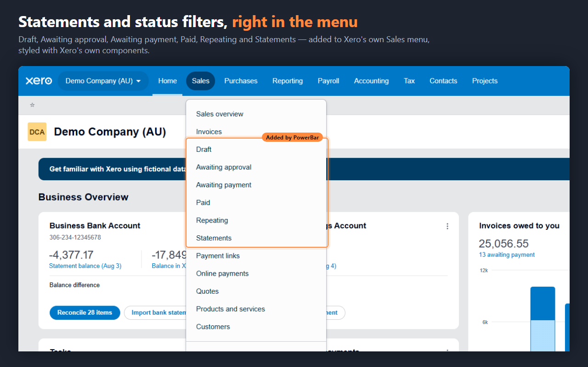
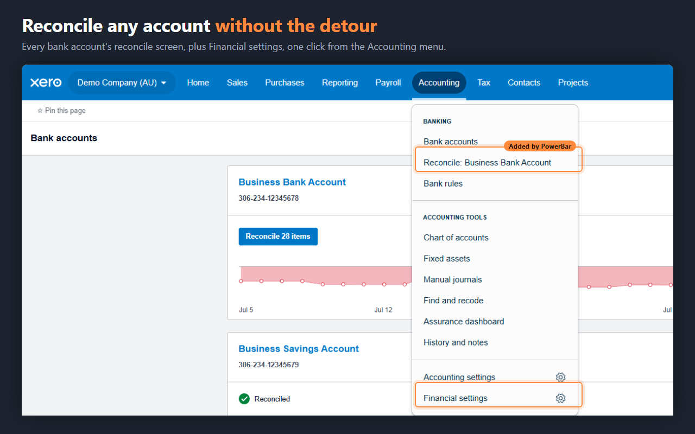
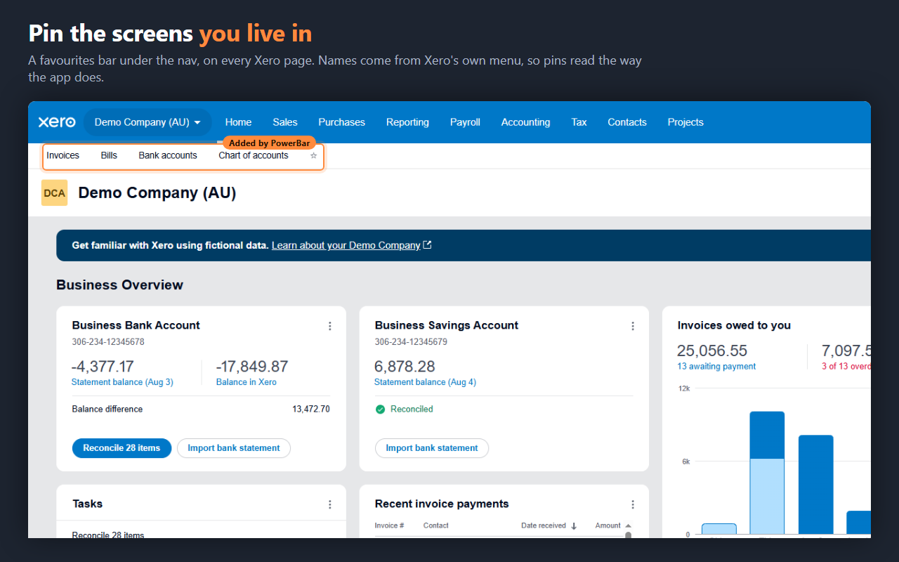

The Xero menu shortcuts
that never shipped.
Every feature here comes from a request on Xero's own product ideas forum, where the votes have been sitting under "Gaining Support" for years. PowerBar ships them, as a Chrome extension.



What you get
Free
| Feature | What it replaces |
|---|---|
| Statements in the Sales menu | Sales → Sales overview → Send statements |
| Invoice status entries | Open the list, then filter it |
| Bill status entries | Open the list, then filter it |
| Favourites bar | Re-navigating to the same four screens all day |
| Reconcile shortcuts | Accounting → Bank accounts → find the card |
| Financial settings shortcut | Organisation menu → Settings → hunt |
| Quieter screens | Promotional and onboarding banners you have read |
Pro
Custom invoice PDF filenames. Xero names every download
Invoice INV-0042.pdf. PowerBar names it
INV-0042 - Acme Ltd.pdf, so a folder of invoices sorts by
client. Your template, your naming.
Every feature has its own on/off switch. Turn off anything you don't want.
Pricing
Payments are handled by Lemon Squeezy as Merchant of Record. Cancel any time; see the refund policy.
Why you can trust it in a client's books
- One site. The extension can read and change pages on
xero.comand nowhere else. Chrome's own permission screen shows you this before you install. - No data collection. No analytics, no telemetry, no accounts, no tracking. Nothing about your books, your clients or your browsing is sent anywhere — there is no server of ours to send it to.
- The free features are open source. No build step and no dependencies: what is in the repository is what runs in your browser.
- Optional permissions stay optional. PDF renaming needs access to downloads. It is requested only if you switch that feature on, and handed back when you switch it off.
Not affiliated with Xero
PowerBar for Xero is an independent product. It is not affiliated with, endorsed by, or sponsored by Xero Limited. Xero is a trademark of Xero Limited.